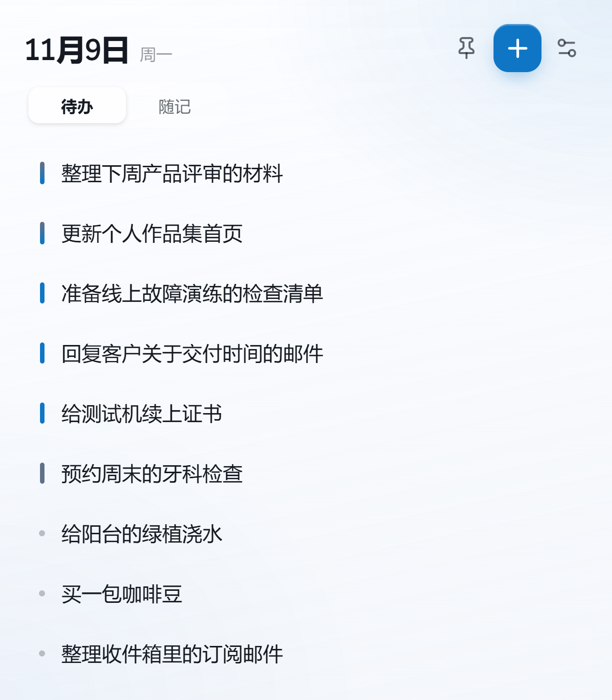

待办 Tasks
按重要和紧急排序，支持归档、恢复和专注模式。 Sort by priority, with archive, restore, and a calm focus mode.
只显示标题，点击展开备注。也可以在同一处记录随记。 Titles only. Click to open details. Keep quick notes in the same place.

按重要和紧急排序，支持归档、恢复和专注模式。 Sort by priority, with archive, restore, and a calm focus mode.
记录临时想法，编辑关键词，登录后与任务一起同步。 Capture quick thoughts, edit keywords, and sync with tasks after signing in.
选择适合当前系统的版本。 Choose the version for your system.